<!DOCTYPE html>
<html lang="pt-BR">
<head>
    <meta charset="UTF-8">
    <meta http-equiv="X-UA-Compatible" content="IE=edge">
    <meta name="viewport" content="width=device-width, initial-scale=1.0">
    <title>JoJo ETERNAL</title>

    <style>
    body{
        background-color: rgb(166, 100, 228);
    }

    h1{
      font-size: 26pt; 
      text-align: center;
      border: 3px solid black;
      background-color: yellow;
      border-radius: 20px 40px;   
    }

    h2{
      font-size: 26pt; 
      text-align: center;
      border: 3px solid black;
      background-color: yellow;
      border-radius: 20px 40px;   
    }
    h3{
      font-size: 26pt; 
      text-align: center;
      border: 3px solid black;
      background-color: yellow;
      border-radius: 20px 40px;   
    }
    h4{
      font-size: 26pt; 
      text-align: center;
      border: 3px solid black;
      background-color: yellow;
      border-radius: 20px 40px;   
    }
    h5{
      font-size: 26pt; 
      text-align: center;
      border: 3px solid black;
      background-color: yellow;
      border-radius: 20px 40px;   
    }
    h6{
      font-size: 26pt; 
      text-align: center;
      border: 3px solid black;
      background-color: yellow;
      border-radius: 20px 40px;   
    }
    p{
      font-size: 15pt;  
    }


    </style>
</head>
<body>
    
</body>
</html>

<hr>
<h1>História</h1>
<p>A história de JOJO bizarre adventure conta a história da família Joestar, onde cada um da linhagem vive uma aventura estremamente bizzara onde pode existir de tudo, esta íncrivel obra foi criada pelo genio Araki e está viva até os dias de hoje, o manga foi lançado no ano 1987, pois é por isso o nome do site JoJo Eternal, hehehe.</p>
<h2>Heroís</h2>
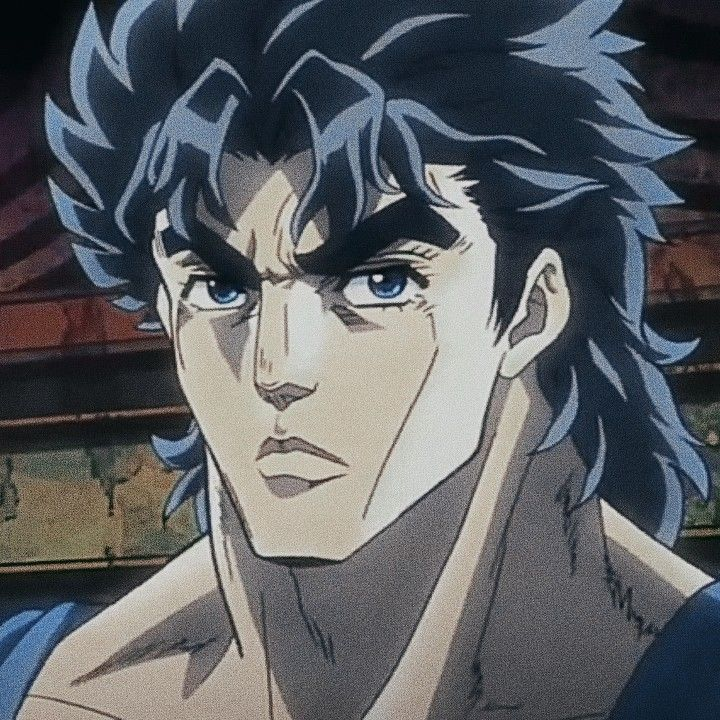
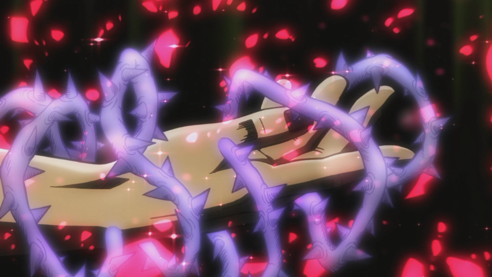
<p>___________(Jonathan Joestar)_______________________________________________(???)______________________</p>
<p>Jonathan foi o primeiro JOJO e um grande cavaleiro da linhagem a se envolver com uma aventura bizarra, quando ele era um bebê sua mãe morreu em um acidente carruagem, apenas seu pai e ele mesmo sobreviveram, futuramente ele viria conhecer seu irmão adotado Dio Brando mas o que deveria ser uma vida feliz se tornaria algo horrível pois o Dio queria toda a herança Joestar e para isso ele transformaria a vida em um inferno, varios anos teriam se passado e Dio tentaria matar o Pai de Jonatham envenenado mas o Jonatham descobre e tenta imperdir que seu pai morra e isso causaria os príncipais eventos da história, e sobre o seu stand infezlimente não se sabe muito mas ele talvez iria ser igual ao Hermit Purple mas nada mais foi mostrado, ele foi um dos usúarios de Hamon mais fortes.</p>
<hr>
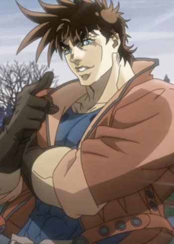
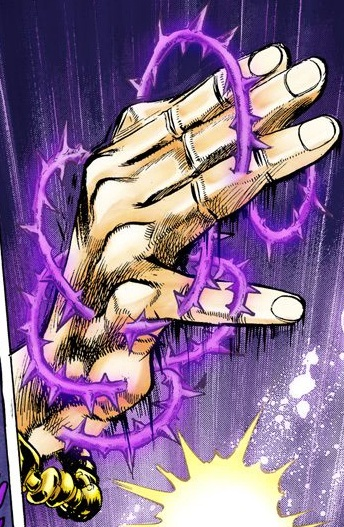
<p>____________(Joseph Joestar)______________________(Hermit Purple)____________</p>
<p>o segundo Joestar nos apresentado foi o grandioso Joseph, um dos JOJO mais famosos de todos apenas atrás de Jotaro, um mestre de hamon e um malandro perfeito onde sua marca é descobrir o que cada inimigo irá dizer em sengundos antes deles falarem qualquer coisa e ele sempre acerta, na sua vida ele foi um jovem normal até que um velho conhecido mestre de hamon se tornar um vampiro e decide eliminar o Joseph mas ele acaba morto pelo sol, dái a sua missão é resgatar o speedwagon e impedir os nazistas de criarem um chaos, mas no final das contas o Joseph teria que enfretar antigos vampirios em estado de hibernação presos em pilares, por isso na maioria das vezes ele são chamados de os HOMENS DO PILAR, seu stand é o Hermit Purple onde com ele pode conseguir futuras fotos dos inimigos e transmitir hamon pelas raizes dos stand.</p>
<hr>
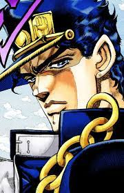
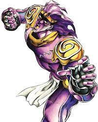
<p>______(Jotaro Kujo)______________(Star Platinum)_________</p>
<p>Jotaro Kujo o JOJO mais conhecido e o que se manteu vivo no anime até a parte 6, Jotaro teve uma vida normal mas ele se transformaria em um homem bombado e com uma paciência zero onde ele demontra todo o seu mal humor com uma frase, "YARE YARE DAZE" futuramente na sua juventude ele diz estar possuído por um espírito sendo que é apenas o seu stand, quando ele descobriu que sua mãe está doente devido a um homem que etornou e roubou o corpo de jonathan, sim Dio Brando está de volta e pretende dominar o mundo mas o Jotaro junto com os STAR CRUSARDERS irão impedir isso com seus stands prontos para luta. </p>
<hr>
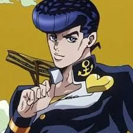
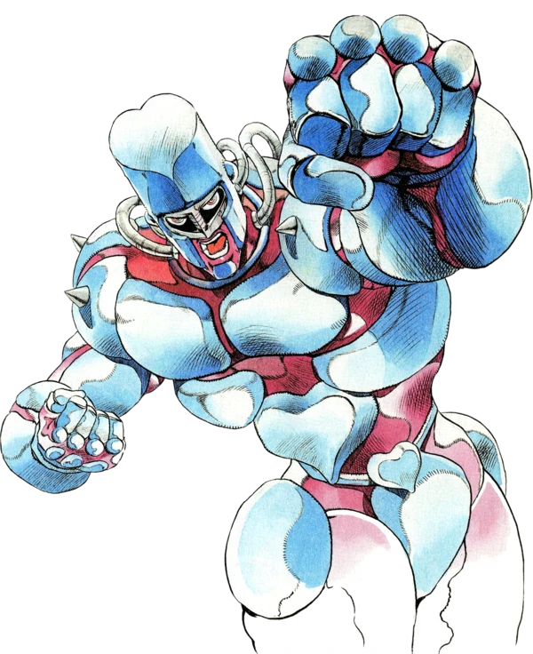
<p> _( Josuke Higashikata )_________________(Crazy Diamond)________________ </p>
<p> Josuke é um simples estudante da cidade de Morioh que tem uma conexão bastarda com a família Joestar, ele é filho de Joseph e tiu de Jotaro, seu stand é capaz de consertar qualquer coisa menos ele mesmo, quando ele era jovem uma doença e febre quase o mataram mas um homem com corte de cabelo diferente o salvou e desde então como homenagem a esse homem ele usa o seu corte de cabelo.</p>
<hr>
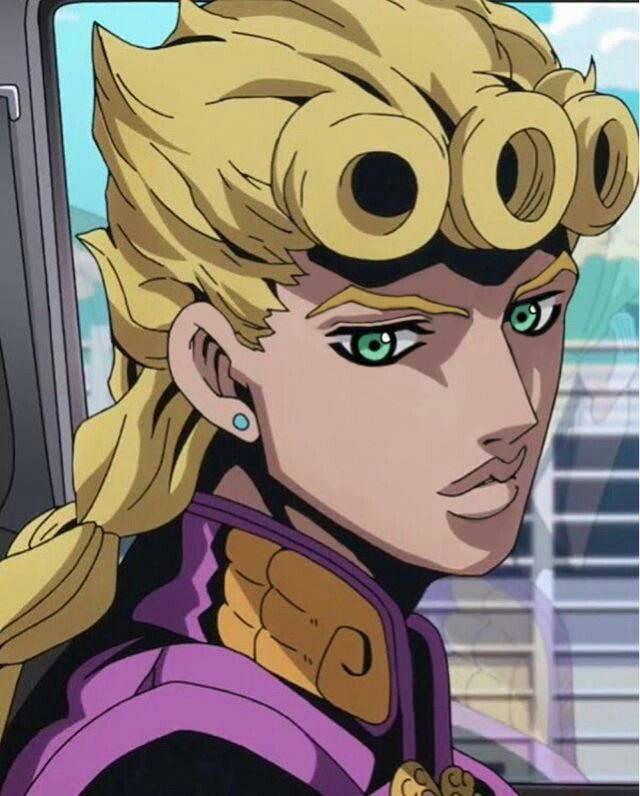
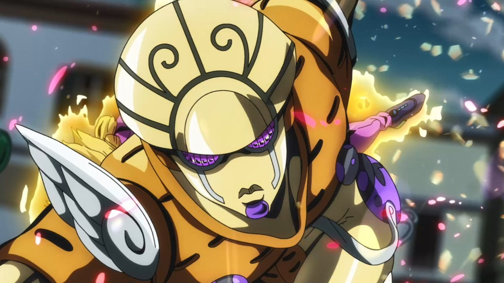
<p> ______(Giorno Giovanna)________________________________(Golden Experience)________________</p>
<p> Giorno nunca teve uma vida fácil, mas depois de ajudar um mafioso ele decidiu se tornar um gangster e se tornar chefe da máfia da Itália e junto com a nova gangue dele precisam proteger a filha do atual chefe da máfia, seu stand é capaz de criar vida.</p>
<hr>
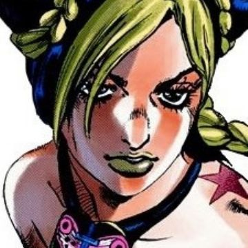
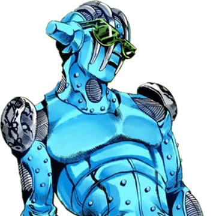
<p>___________(Jolyne Kujo)__________________________(Stone free)___________________</p>
<p> Jolyne sempre foi uma garota esquentada e um pouco destrutiva, talvez por falta de ter um pai ninguém sabe mas futuramente ela seria presa por um crime que ela não havia feito e teria que recuperar o disco de memória de seu pai e descobrir quem era o usuário do whitesnake, seu stand é capaz de criar linhas que podem sair do seu corpo.</p>
<hr>
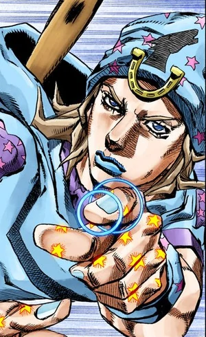
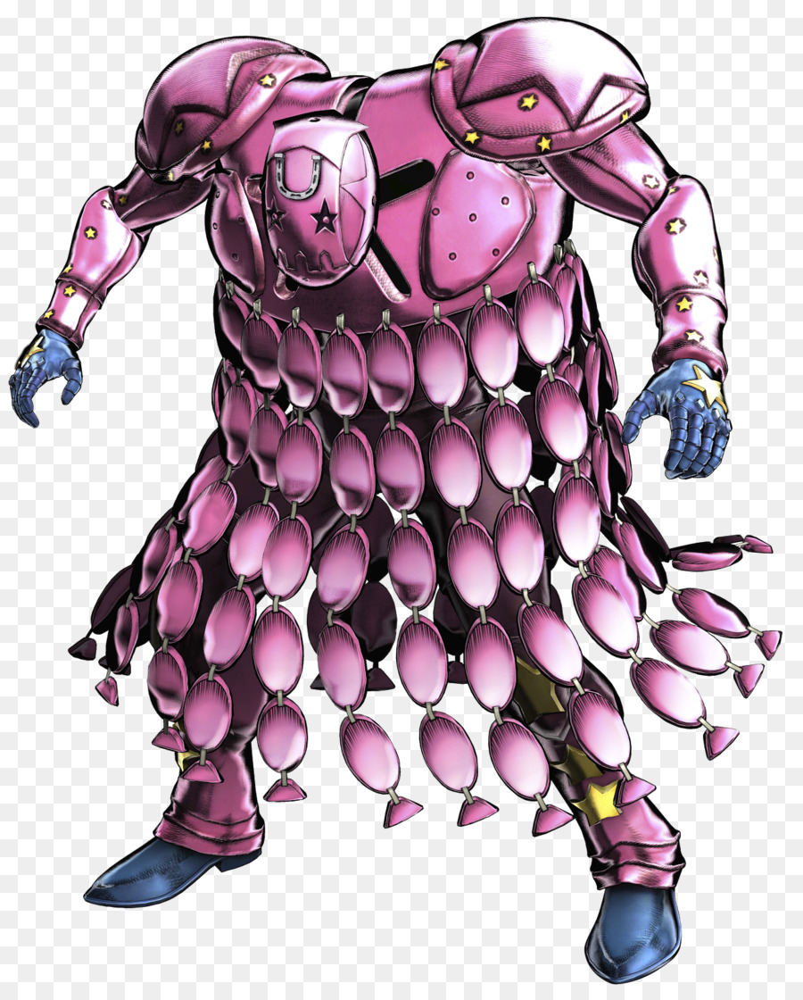
<p> ____( Johnny Joestar )______________( Tusk )________________</p>
<p> Johnny viveu com uma família rigorosa mas seu irmão sempre esteve ao seu lado para ajudá-lo mas em um acidente de cavalo seu irmão acabou morrendo mas Johnny continuou com seu legado de corrida a cavalo mas por conta da sua arrogância ele acabou ficando cadeirante mas tudo muda quando a corrida steel ball run chega ao seus ouvidos e está decidido a correr nessa corrida e reconquistar seu mérito e suas pernas de volta, seu stand pode evoluir até 4 formas e ele usa as suas unhas com a rotação áurea para disparar nos inimigos como uma bala.</p>
<hr>
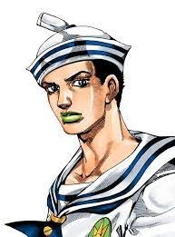
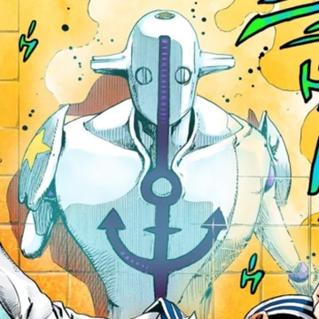
<p>____(Josuke Higashikata)_________________(Soft & Wet)_________________</p>
<p> O Josuke foi encontrado sem nenhuma lembrança do seu passado e nem mesmo quem ele era mas graças a sua amiga Yasuho e a família Higashikata eles tem a missão de conseguir uma fruta poderosa para ajudar a sua suposta mãe e derrotar os homens de pedra, seu stand é capaz de roubar qualquer coisa com a suas bolhas de sabão.</p>
<hr>
<h3> Vilões </h3>

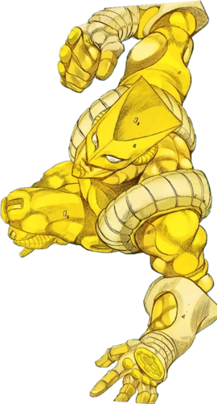
<p>___________( Dio Brando )____________________( The World )_____________</p>
<p> Dio foi criado pelo seu pai e acabou se tornando um ser de maldade pura, futuramente ele descobriu o uso verdadeiro de uma máscara de pedra que é capaz de transformar qualquer ser humano em um vampiro com poderes elementais e olhos lazer, futuramente o Dio conseguiria roubar o corpo de Jonathan e iniciaria os stands pelo mundo através das flechas e conseguiria achar o caminho para o céu que foi escrito no seu diário, seu stand é capaz de parar o tempo por alguns segundos. </p>
<hr>
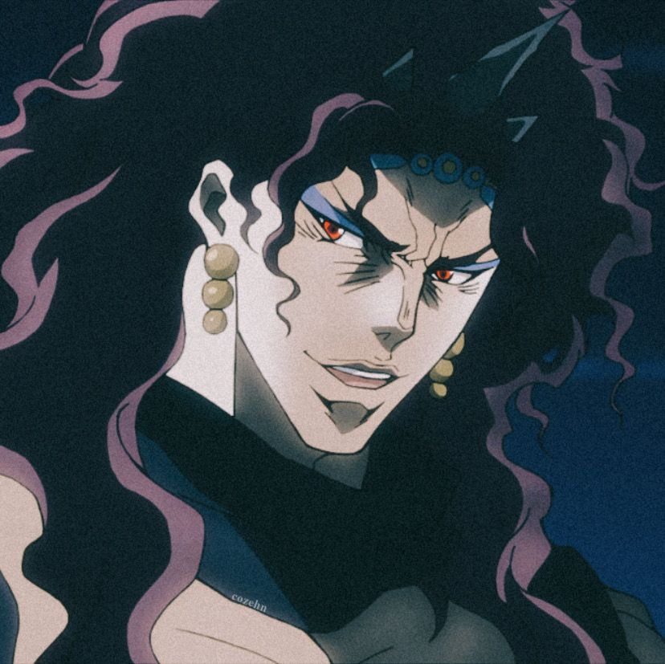
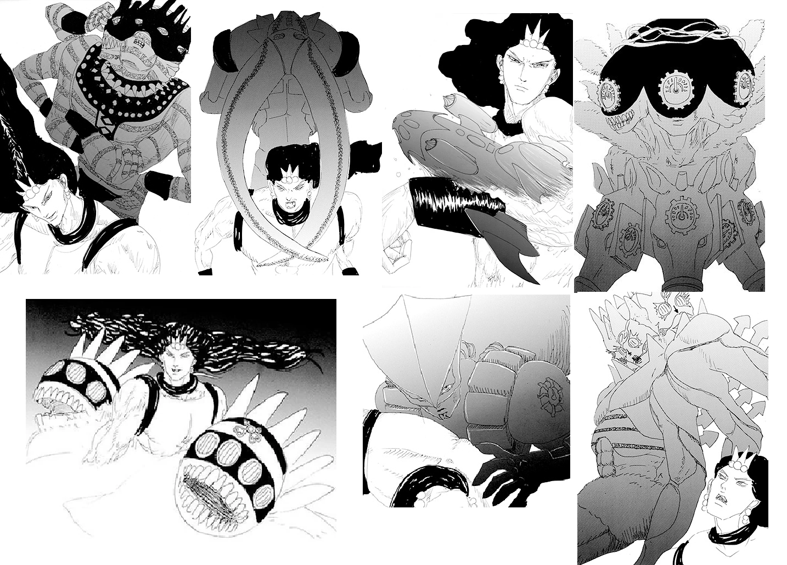
<p> ______________(Kars)__(Ultimate whitesnake,  Ultimate D4C, Ultimate U-Bot,  Ultimate Made in Heaven, Ultimate Dune,  Ultimate The World e o Ultimate C-Mon)</p>
<p> Kars é um homem do pilar e um vampiro poderoso com o elemento Luz, a muito tempo sua espécie era a mais poderosa e evoluída da terra mas seu sonho era obter o sol para ele então criou a máscara de pedra e junto com seus seguidores Wammu e ACDC tentariam pegar a pedra de vermelha de Aja para se tornarem a própria natureza. </p>
<hr>
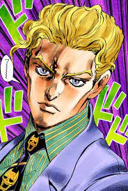
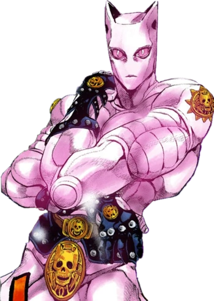
<p>____( Yoshikage Kira )_________( Killer Queen )________</p>
<p> Kira teve uma vida normal e boa mas isso mudou até ver o quadro da Monalisa e se apaixona pela suas mãos e se tornar um assassino frio e calculista que rouba mãos de mulheres e que apenas deseja uma vida tranquila, seu stand é capaz de transformar qualquer coisa que toca em uma bomba.</p>
<hr>
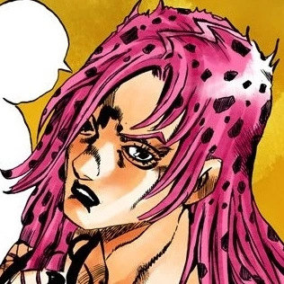
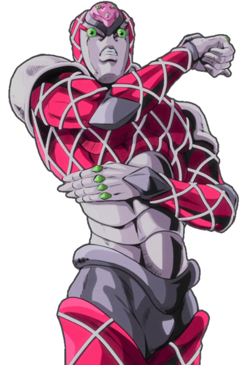
<p> __________( Diavolo )________________________( King Crimson)_________</p>
<p> Pelo fato de ter forçado o seu parto ele acabou com a sua mente dividida assim nascendo Doppio e Diavolo, duas mentes no mesmo corpo, Diavolo foi sempre um monstro manipulador e assassino mas graças ao seus poderes ele se tornou o chefe da máfia e sua identidade se tornou um silêncio eterno, seu stand é capaz de apagar o tempo.</p>
<hr>
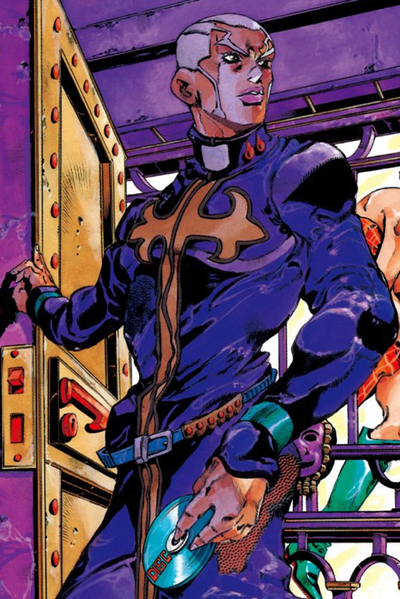
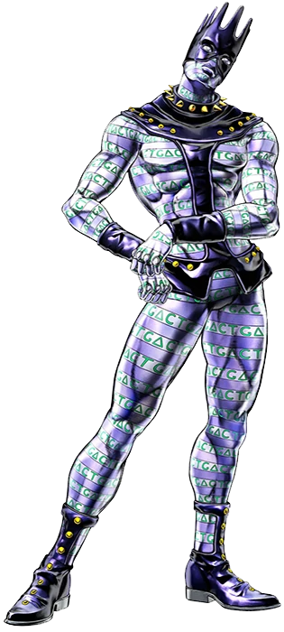
<p> _____( Enrico Pucci )__________( Whitesnake )________</p>
<p> Pucci foi um simples padre que havia perdido seu irmão gêmeo e sua irmã em um acidente, mas ele conheceu o Dio Brando e os dois acabaram se tornado amigos e depois de sua morte o Pucci decidiu continuar o seu caminho e alcançar o céu e para isso ele rouba as memórias de Jotaro, seu stand é capaz de roubar memórias e o próprio stand da pessoa que são transformados em discos de CD.</p>
<hr>
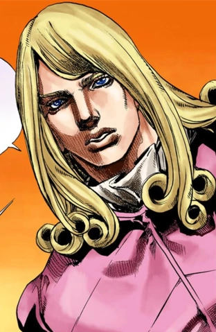
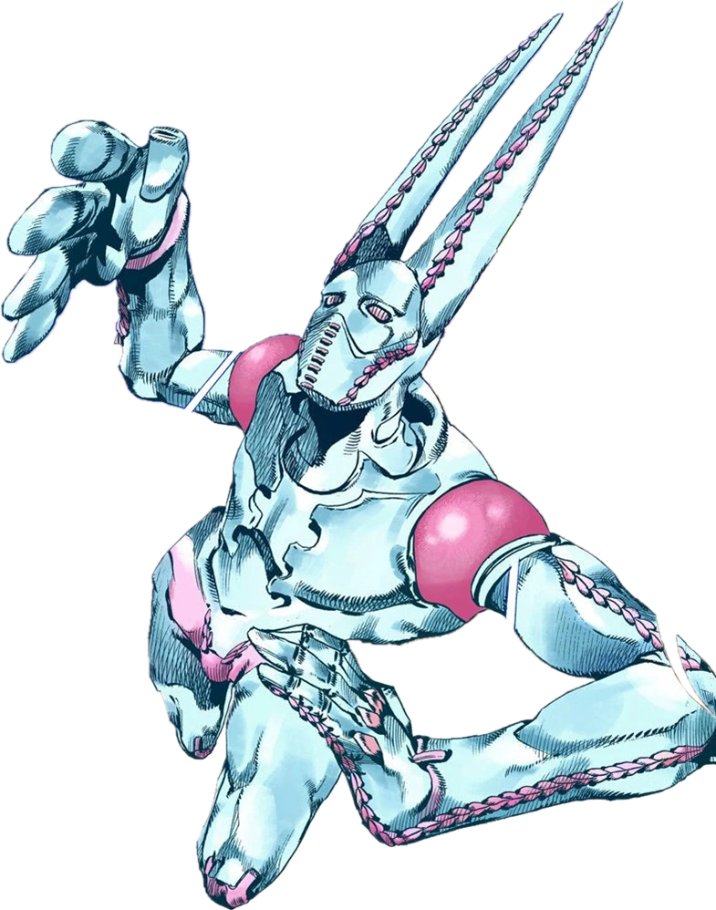
<p> ____( Funny Valentine )______________( D4C )____________</p>
<p> Valentine foi um homem que daria a vida pela sua pátria americana, depois de ficar perdido no deserto ele encontrou um coração do cadáver Santo e conseguiu sobreviver mas foi capturado e torturado assim ganhando a sua cicatriz em formato da bandeira dos Estados Unidos e criou a corrida para encontrar o resto do cadáver e transformar a América no paraíso, seu stand é capaz de fazê-lo viajar por dimensões e realidades diferentes. </p>
<hr>
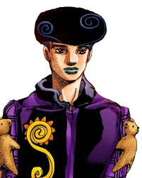
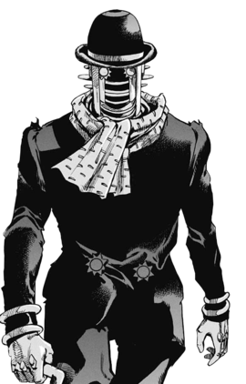
<p>__________( Tooru )________________( Wonder of U)_____</p>
<p> O Tooru é um Homem de Pedra ou seja ele não possui emoção nenhuma e por ninguém, ele manipula a Yasuho para conseguir o seus objetivos que é se tornar o mais poderoso da organização dos Homens de pedra e dominar a rede comercial de remédios do mundo usando as rokakas, seu stand é capaz de causar calamidade nas vítimas, ou seja causar o azar nelas e para que isso aconteça alguém precisa ficar perseguindo ou o Tooru ou o seu stand que é capaz de se camuflar como um homem normal. </p>
<hr>
<h4> Relíquias e poderes </h4>
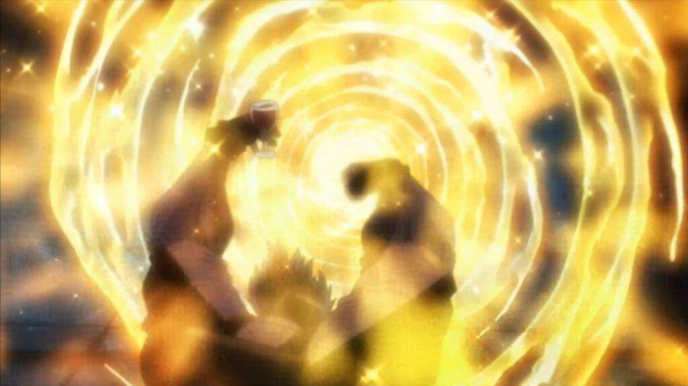
<p> Hamon </p>
<p> Ela é uma técnica de respiração que usa circulações sanguíneas que aumentam a força do usuário e assemelha-se a energia elétrica e energia solar, o que é potente e capaz de matar um vampiro e foi criada por guardiões da Pedra de Aja.</p>
<hr>
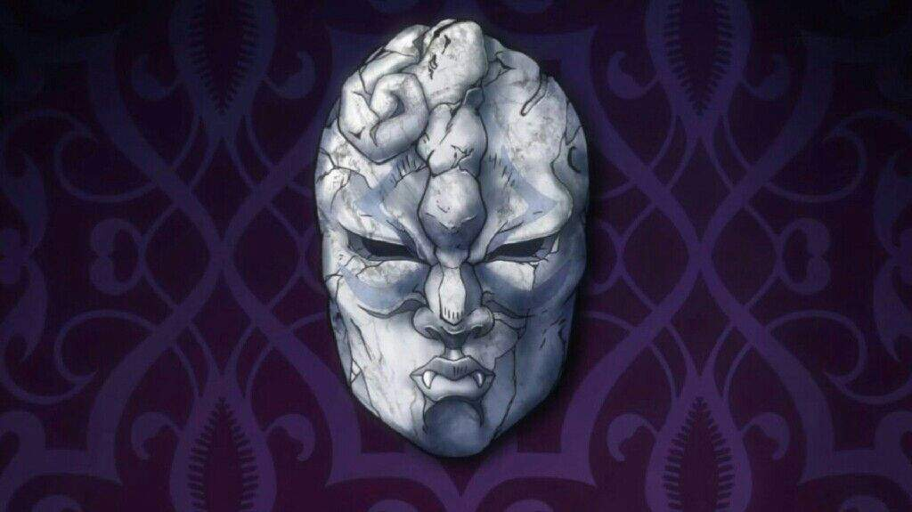
<p> A Máscara de pedra </p>
<p> Foi criada pelo Kars para alcançar o sol mas não tinha o poder o suficiente para isso, então ela apenas podia transformar pessoas em seres que podem absorver sangue para ficar mais forte, imortalidade, olhos lazer e poderes elementais como o Dio que tinha poderes de gelo.</p>
<hr>
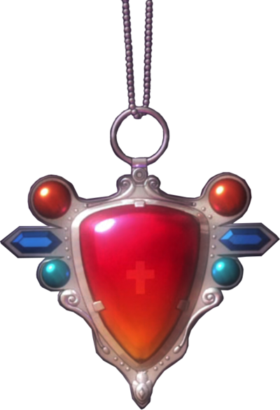
<p> Pedra de Aja </p>
<p> A pedra tem uma energia que se assemelha ao poder do Sol tanto que qualquer dano dado à ela era absorvido e transformado em um lazer solar e é o último ingrediente para que a máscara de pedra possa ser perfeita e fazer com que o usuário se torne a própria mãe natureza.</p>
<hr>
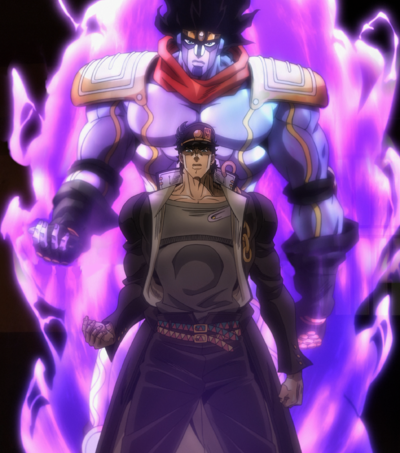
<p> Stands </p>
<p> Os stands são manifestações do espírito da pessoa em um corpo físico e cada um deles tem poderes diferentes ou poderes que se assemelham-se em certas situações e se o stand for ferido ou destruído isso pode afetar o próprio usuário e só podem ser vistos por apenas outros usuários de stands.</p>
<hr>
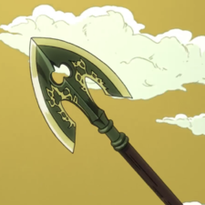
<p> A flecha de Stands </p>
<p> Se qualquer ser vivo conseguir sobreviver à flecha, automaticamente terá um stand, pode demorar mas você terá um stand.</p>
<hr>
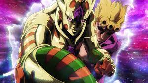
<p> O Requiem</p>
<p> O Requiem é a evolução suprema de um stand é para alcançá-la você precisa ter um objetivo que você faria de tudo para conseguir fazê-lo mas tem que ser qualquer coisa mesmo tipo da até a própria vida para isso e depois você terá que fazer stand se perfurar com uma flecha daí alcançara o poder de um Deus.</p>
<hr>
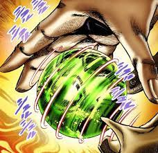
<p> Spin </p>
<p> O spin é uma energia de rotação infinita que é capaz de se adaptar em qualquer situação e normalmente ele possui uma ferramenta para o uso melhor dele que é as próprias steel balls que são bolas de aço que podem manusear o spin de várias formas. </p>
<hr>
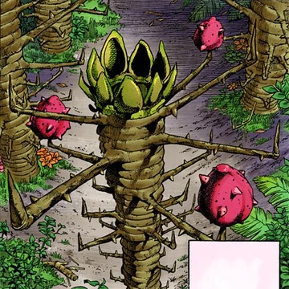
<p> Rokakakas </p>
<p> São frutas capazes de fazer uma troca equivalente e podem ser bem dolorosas, exemplo você é mudo daí come a fruta e recupera a voz mas automaticamente você perde os olhos onde se tornaram pedra, resumindo você pede uma coisa você recebe mas perde outra daí é substituído por pedras ou se torna pedra melhor dizendo. </p>
<hr>
<h5> Ordem Cronológica </h5>
<p> Phantom Blood</p>
<p> Battle Tendency</p>
<p> Jorge Joestar </p>
<p> StarDust Crusaders</p>
<p> StarDust Crusaders Gemini of Universe </p>
<p> Oingo & Boingo: Brothers adventure</p>
<p> Dolce and his master </p>
<p> Crazy Diamond's Demonic Heartbreak</p>
<p> Diamond is Unbreakable </p>
<p> The book </p>
<p> Dead man's questions</p>
<p> Thus spoke Rohan Kishibe </p>
<p> Jolyne Fly High Wy Gucci</p>
<p> Vento Aureo </p>
<p> Purple Haze Feedback </p>
<p> Over heaven</p>
<p> Under execution under jailbreak </p>
<p> Stone ocean </p>
<p> Fujiko's Worldly Widson Whitesnake Misculation ( se eu fosse vocês passavam longe desse porque isso parece mais um hentai do que um spin off de verdade, acredite NÃO LEIA EU TO TE AVISANDO CARA.) </p>
<p> Steel Ball Run</p>
<p> Jojolion</p>
<hr>
<p> Por enquanto é só isso mas futuramente pretendo colocar mais coisas, espero que tenham gostado e tchau. </p>
<h6> FIM </h6>
